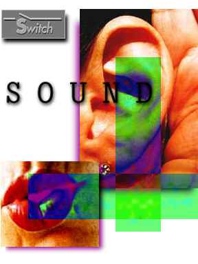

Vol. 2 No. 1

TABLE OF CONTENTS
ARTICLES
Questions Concerning Music Technology: From Heidegger's View to Feenberg's
Subversive
Rationalization
by Agostino DiScipio
Narrative as Genealogy: Sound Sense in the Hypertext Age
by Larry Wendt
Interview with Ed Osborn
by Yumika Tanaka
Who Makes Electronic Music? Vocalists, Composers, Gender and Electronic Music Technology
by Hannah Bosma
REVIEWS
SoundCulture 96
Pamela Z: "Parts of Speech"
by Ruth Eckland
Audible Terrain: A Day of SoundCulture
by Jeremiah Moore
Richard Lerman at New Langton Arts
by Douglas Quin
EDITOR'S NOTE
CALENDAR OF EVENTS
SWITCH GATEWAY
CREDITS
NEXT ISSUE
FEEDBACK